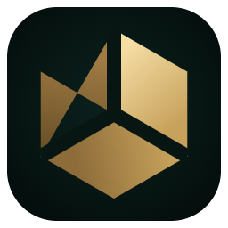

帷幕之缝THE SEAM
3 个形状｜左帘 · 右帘 · 中缝。两片帘 96→928 高 160→864； 缝上下各 118 宽，两条边同向左弯 49，全程等宽。
弱点：缝只有 1.8px 宽，16px 下靠两点抗锯齿撑着；右帘如果压得太暗，就会退成“一块金板 + 一道光”。
单色 · 纯白

256 / 64 / 32 / 16 四尺寸并排，单色版只判剪影
3 个形状｜左帘 · 右帘 · 中缝。两片帘 96→928 高 160→864； 缝上下各 118 宽，两条边同向左弯 49，全程等宽。
弱点：缝只有 1.8px 宽，16px 下靠两点抗锯齿撑着；右帘如果压得太暗，就会退成“一块金板 + 一道光”。
单色 · 纯白

3 个形状｜正六边形 R=380，三条 120° 等分切线切成 3 个菱形面；切线宽 64，颜色取底板色。
弱点：切面是内部结构，16px 下三条缝会糊成一片，只剩下六边形轮廓——它其实是“32px 起才成立”的方案。

单色 · 纯白

2 个形状｜断口环（外 384 / 内 240，缺口 42°）+ 环外崩落的一片环带碎片。环内留空，不塞符号。
弱点：断口环本身像“加载中”；碎片在 16px 会并进环里，只剩一个不干净的凸起。
单色 · 纯白
16px 像素放大 ×8（单色版直接放大，不做插值）
A · 两片帘 + 一道缝
B · 六边形 + 三条缝
C · 断口环 + 碎片
同一组 256 / 64 / 32 / 16，单色版换纯黑
3 个形状｜左帘 · 右帘 · 中缝。缝是负空间，缩小后靠“两片之间的空”活着。
弱点：浅底上两片帘都变成深色，中间的缝直接露出白底，辨识度反而比深底更高。
单色 · 纯黑
3 个形状｜六边形 R=380，三条 120° 切线把面切成三个菱形，明暗只靠内部切线区分。
弱点：单色版没有明暗可用，只剩三条负空间缝；缝一细，切面就读不出来。
单色 · 纯黑
2 个形状｜环外 384、内 240、缺口 42°，断口是唯一的信息点；碎片只是“刚崩下来”的时间提示。
弱点：缺口只有 42°，小于常见断环图标的口子，远看容易被补成完整圆。
单色 · 纯黑